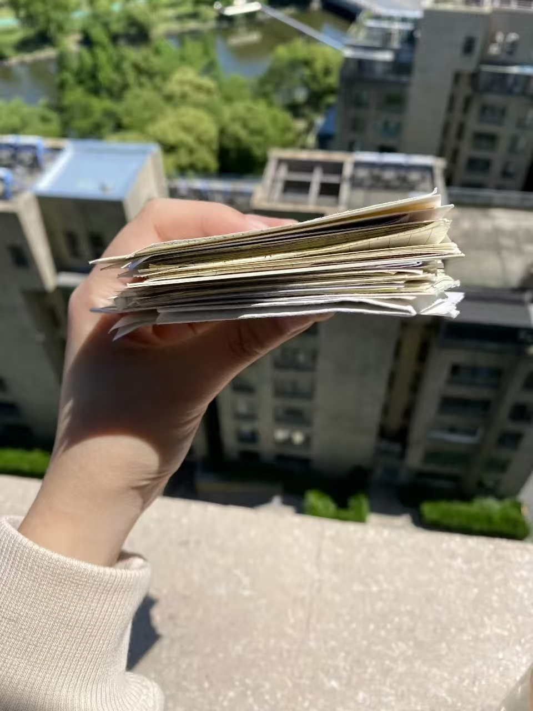
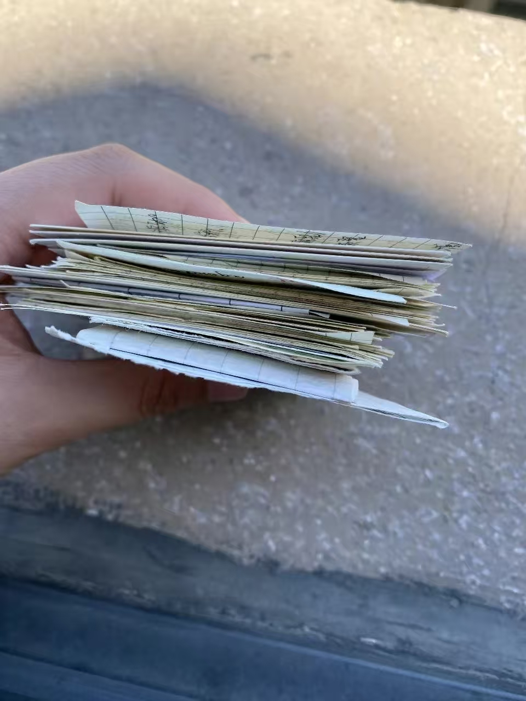

写给高考的你，也写给曾经的自己


昨天返校，整理东西时翻到了高三下半年自己写的小纸条。一股难以言说的情绪涌上心头……
那时人生大事的考试失利了，特别特别伤心，伤心上升到自卑，情绪无法释放，整天郁郁寡欢。在走廊走路都低着头，头都不敢抬起来。现在回想起那段经历，心里还是堵得慌，心疼自己。
我就通过给自己写小作文、小纸条来激励自己。写一些肯定的话，比如"要相信自己""人生容错率很大""允许自己慢一点""没别人优秀没关系"。也写了很多鸡汤，比如"所谓无底深渊，下去，也是前程万里。既然已经跌到谷底，怎么走都是向上"。当然也有自责的话，恨自己没有学习的天赋、记忆力不好……
这个方法确实帮了我很多，让我慢慢走出了失利的阴霾，变得乐观起来。现在看那些纸条，只觉得当时的自己还没开智。丢了好多，但当时书包夹层每层都有，随手一捞就是好几张。
记得有段时间特别不信任自己，写小作文也无法释放，就去找恩师说了烦恼。还没走到办公室门口，不争气的眼泪就下来了。老师鼓励我说时间会冲淡一切，还分享了她教过的学生的经历。瞬间心情就好了很多。
那个瞬间的感触，文字能记录，照片能记录——所以我喜欢拍照和写随笔。不是为了给谁看，而是记录自己的成长蜕变。现在翻初中高中的青涩字迹和照片，心里暖暖的。
如今回头看，轻舟已过万重山。虽然最终也没有考得很好，但当时拼尽全力，不后悔就够了。高考打击了我，也锻炼了我的内心。虽然现在依旧迷茫、普通，但我已不缺从头再来的勇气。
要自信，要有勇气，要接纳自己的所有。
勇敢的人先享受世界。 "
祝福所有要高考的宝子们，高考加油，金榜题名！
无论结果如何，人生都不会轻易完蛋。